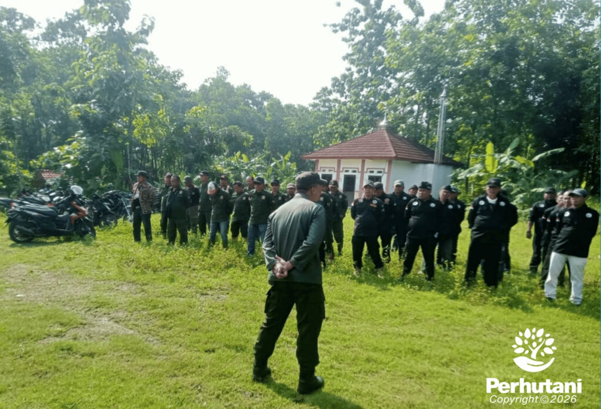

PURWAKARTA, PERHUTANI (12/01/2026) | Dalam rangka meningkatkan keamanan dan menjaga kelestarian kawasan hutan, Perum Perhutani Kesatuan Pemangkuan Hutan (KPH) Purwakarta melaksanakan kegiatan patroli hutan di petak 27, 26, dan 25 Resort Pemangkuan Hutan (RPH) Kutapohaci, Bagian Kesatuan Pemangkuan Hutan (BKPH) Teluk Jambe, pada Jumat (08/01).
Kegiatan patroli tersebut dilaksanakan oleh jajaran Polisi Hutan Mobil (Polhutmob) KPH Purwakarta bersama Lembaga Masyarakat Desa Hutan (LMDH) Mulya Jaya, Desa Mulya Sejati. Patroli dilakukan sebagai upaya pencegahan terhadap gangguan keamanan hutan (Gukamhut), seperti pencurian kayu, perambahan kawasan, maupun aktivitas ilegal lainnya yang berpotensi merusak ekosistem hutan.
Perhutani KPH Purwakarta melalui Kepala BKPH Teluk Jambe, Deni Mardias, menyampaikan bahwa patroli rutin yang melibatkan masyarakat merupakan langkah strategis dalam menjaga kawasan hutan agar tetap aman dan lestari. Keterlibatan masyarakat sekitar hutan, khususnya LMDH, menjadi kekuatan utama dalam menumbuhkan rasa memiliki dan tanggung jawab bersama terhadap kelestarian hutan.
Sementara itu, Komandan Regu Polhutmob KPH Purwakarta, Wiratma, menegaskan bahwa patroli tersebut tidak hanya berfokus pada aspek pengamanan, tetapi juga sebagai sarana edukasi kepada masyarakat terkait pentingnya menjaga hutan dari berbagai potensi gangguan. Melalui patroli terpadu, kondisi kawasan hutan dapat terus dipantau sekaligus diberikan imbauan kepada masyarakat agar berperan aktif dalam menjaga keamanan dan kelestarian hutan.
Dukungan terhadap kegiatan patroli bersama ini juga disampaikan oleh Pengurus LMDH Mulya Jaya, Nace Permana, yang menyatakan kesiapan masyarakat desa hutan untuk terus bersinergi dengan Perhutani dalam menjaga kawasan hutan. Menurutnya, hutan merupakan sumber kehidupan bersama yang harus dijaga secara kolektif dan berkelanjutan.
Melalui kegiatan patroli terpadu ini, Perhutani KPH Purwakarta berharap tercipta kondisi kawasan hutan yang aman dan lestari, sekaligus terbangun hubungan yang semakin harmonis antara Perhutani dan masyarakat sekitar hutan dalam pengelolaan sumber daya hutan secara berkelanjutan.
Editor: WK
Copyright © 2026 Warta Nusantara Barat